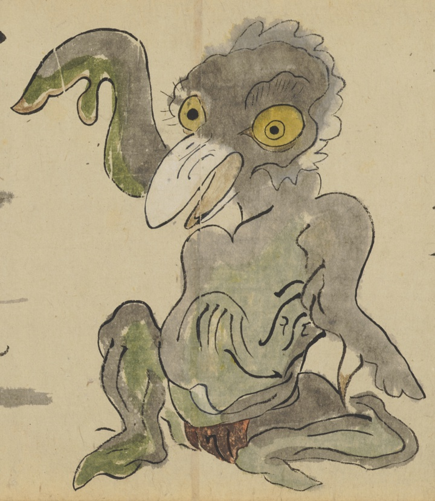

髪切；カミキリ，飛鬼；トビオニ，鬼；オニ

飛鬼または髪切。くちばし。黄色い目。手が鋏のようになっている。赤い褌をつけている。
著作者：長岡多門／出典：親書誌：U426_nichibunken_0448：諸国妖怪図巻／日付：2019／資源識別子：U426_nichibunken_0448_0001_0013
Copyright (c)2010- International Research Center for Japanese Studies, Kyoto, Japan. All rights reserved.